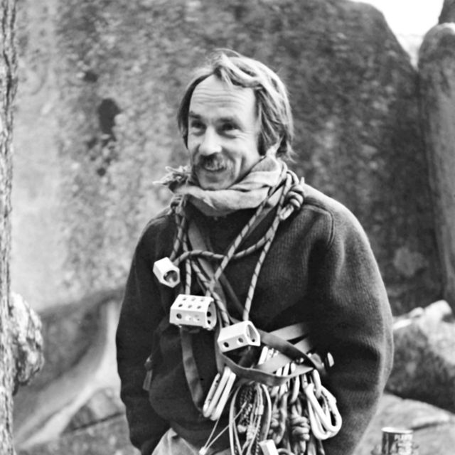

When I was a kid, I would read lots of history books and biographies. I was fascinated by stories of people's life, the indivudal struggles and successes that ultimately shaped who they are stood out to me as a naive kid. In ninth grade, my dad introduced me to a watch blog, Hodinkee, from a Bloomberg article which started my interest in wristwatches. Of all material possessions, a watch is the most important to me, because as I read more and more about the provenance of models or the rationale in design, but more importantly I read about the people who wore them. To me, this is a fascination in the personal fingerprint that an item like that can become to the wearer; every flaw or mark tells a story about the wearer and their life. So, below are a couple of individuals that I have found interesting to read about, folks who aren't afraid to do it their own way and be creative.

Yvon Choinard is the founder of Patagonia, the outdoor juggernaut. The story of the humble beginnings of Patagonia (and later Black Diamond Equipment as well), selling forged pitons out of the back of his car to the leader in sustainable business. What I enjoy about this story is the insane (and unpredictable) trajectory that the brand took as time passed, started as a simple business idea with a single product. Once the company was established, they grew their catalogue to sourcing good quality products from manufacturers in Europe, and eventually to other parts of the world. To me, reason why Choinard is a unique indivudal (politics aside), is that he created a company with simple means and upheld his vision for the brand until his recent departure.

Finally, I'm including Jack London. Although his personal life was somewhat peculiar, he wrote some of my favorite short stories I grew up reading such as "To Build a Fire", "All Gold Canyon", and "South of the Slought". What makes his story stand out to me is that he dove into the lives of the people he was writing about. Most of his stories center around the Alaskan Gold Rush at the turn into the 20th century, which he made the journey to the Yukon in 1897. This time of his life influenced much of his writing, but his unique mispent youth influenced his works. What is interesting to me about London is that he wrote about what he knew and experienced first hand (though much of what he wrote was fiction), and tied these experiences into the workings of characters. He seeked out these treacherous experiences in his youth and ultimately influenced his career and life.
*Also, this is not me advocating to go do something dangerous for the sake of doing something dangerous, I just found some of these stories very interesting*
*Also, this is not me advocating to go do something dangerous for the sake of doing something dangerous, I just found some of these stories very interesting*